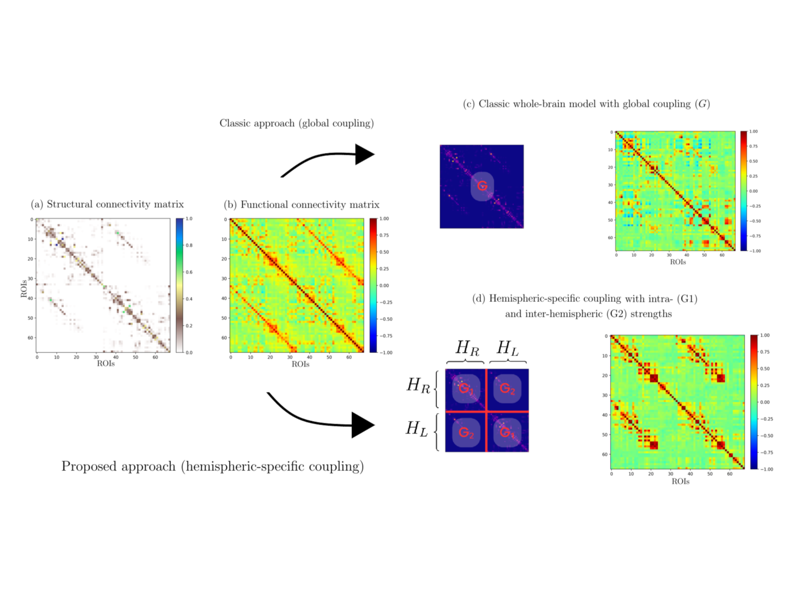
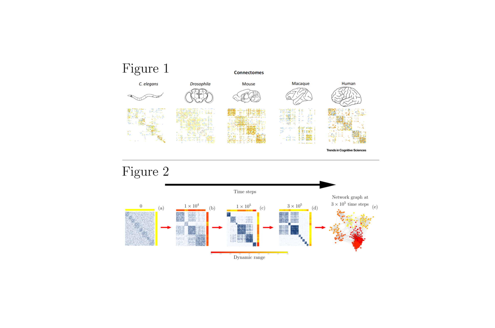
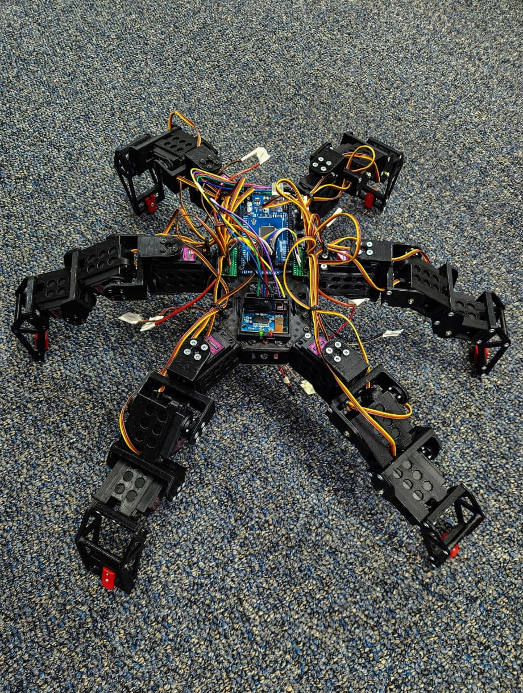
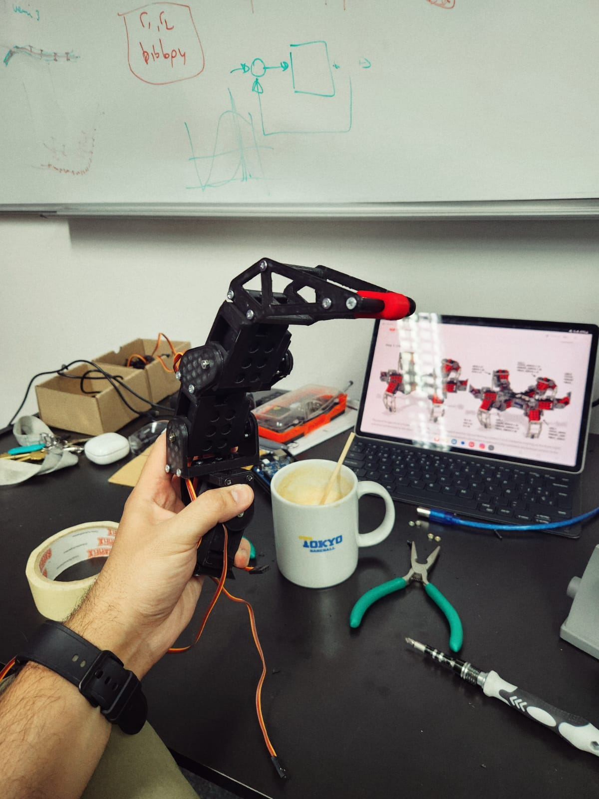
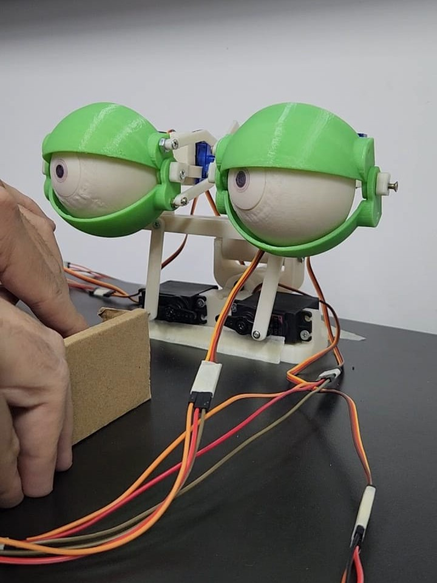
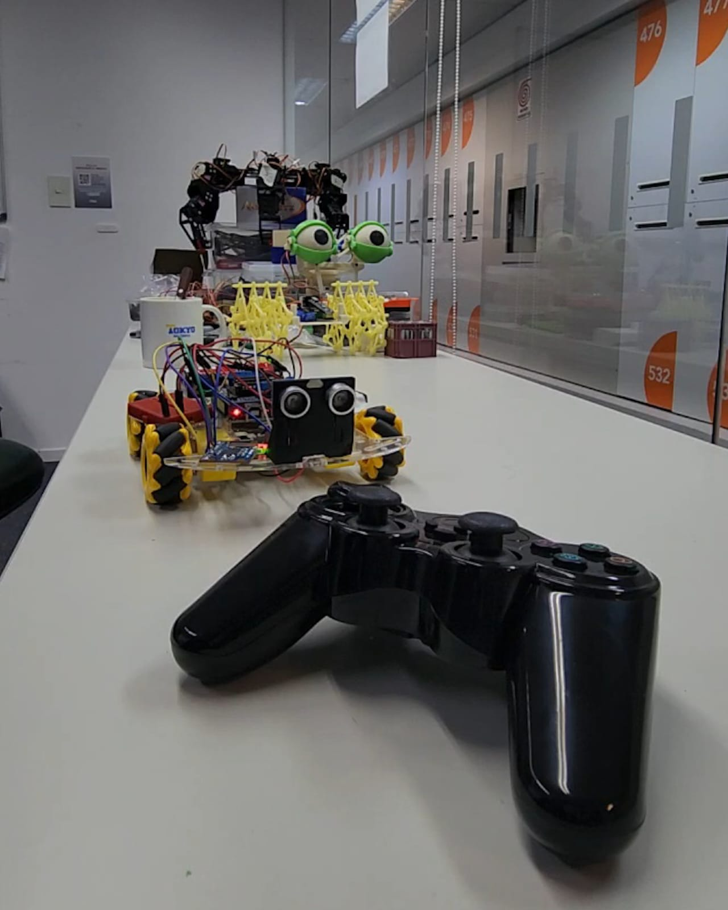
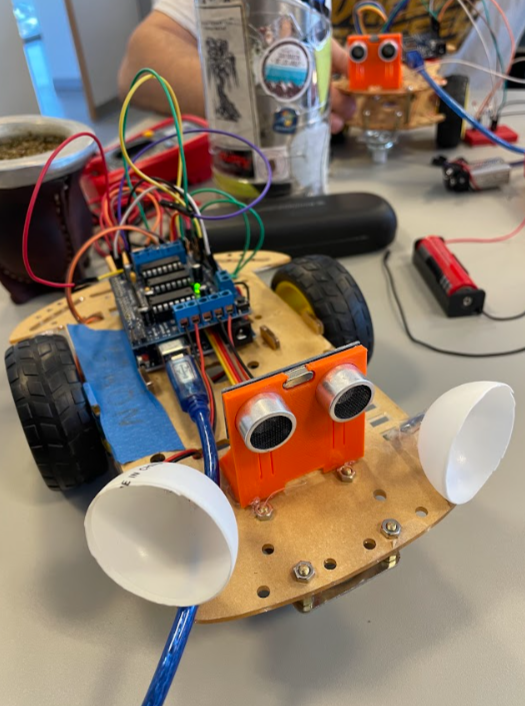

About Me
My name is Ramiro Plüss. I am a physicist, graduated from UNR–FCEIA, and currently a PhD candidate at ITBA. My research combines computational models of complex networks with robotic models to study proprioception and cognition. In recent work, I investigated how changes in connection density in an adaptive network of chaotic units shape cluster synchronization and structural properties such as integration and segregation, a balance that is fundamental in neuroscience. I have also applied a hemispheric-specific Wilson–Cowan model to connectome data from patients with schizophrenia, improving the modeling of functional connectivity.
See more See less
Currently, I am working with robotic models based on real connectomics of Drosophila and C. elegans to explore embodiment and autonomy. These connectome architectures can be seen as biologically pre-trained networks, offering a bridge between neuroscience and robotics while reducing reliance on conventional artificial training. With this line of research, I aim to contribute to autonomous robotics and long-range exploration, while also expanding my interests toward models of consciousness, behavior, and artificial intelligence.
Publications & Preprints
-
Hemispheric-Specific Coupling Improves Modeling of Functional Connectivity
arXiv -
The Role of Connection Density in Adaptive Networks with Chaotic Units
arXiv -
Bachelor’s thesis in Physics: “Dynamics and Structure in Adaptive Neural Networks”
UNR RePHip repository
Research Figures
Selected figures from my recent publications and comparative references.


Robotics Prototypes & Evolution
A compact carousel showing the progression of my robotics prototypes.





Poster Presentations in Conferences and International Schools
- Modeling Functional Connectivity Alterations in Schizophrenia Patients from the Structural Connectome (with Hernán Villota, Tomás Bosch, and Patricio Orio). Presented at XIV National Congress and XV International Seminar of Neurosciences, Bogotá, Colombia (April 2025).
- Phase Transition in an Adaptive Network with Chaotic Units (with Pablo Gleiser). Presented at School on the Origins of Life, Behavior and Cognition – ICTP-SAIFR, São Paulo, Brazil (March 2025); School on Synchronization: from Collective Motion to Brain Dynamics – ICTP-SAIFR, São Paulo, Brazil (February 2025); IRCN/Chen Institute Joint Course on Neuro-inspired Computation – University of Tokyo, Japan (July 2024); RAFA 108 – Bahía Blanca, Argentina (September 2023); RAFA 107 – Bariloche, Argentina (September 2022); Science, Technology and Innovation Conference – Rosario, Argentina (October 2022).
- Preliminary Study of the Viscoelastic Properties of Red Blood Cells Irradiated with Gamma Radiation Using a Rheometer (with F. Gómez Fava et al.). Presented at RAFA 107 – Bariloche, Argentina (September 2022); Science, Technology and Innovation Conference – Rosario, Argentina (October 2022).
Relevant programs and courses
- School on the Origins of Life, Behavior and Cognition, ICTP-SAIFR, Brazil — March 2025
- School on Synchronization: from Collective Motion to Brain Dynamics, ICTP-SAIFR, Brazil — February 2025
- Latin American Summer School of Computational Neuroscience, University of Valparaíso, Chile — January 2025
- Artificial Intelligence Systems, ITBA, Argentina — August–November 2024
- Complex Networks, ITBA, Argentina — August–November 2024
- Modeling and Analysis of Complex Systems, UBA — July 2024
- IRCN/Chen Institute Joint Course on Neuro-inspired Computation, University of Tokyo — July 2024
- Neuroscience and Productive Development, ITBA — March–June 2024
- Latin American School of Computational Neuroscience, USP — January 2024
- Bioinspired Robotics, ITBA — August–December 2023
- Introduction to Medical and Biomedical Physics, UNR — October–December 2019